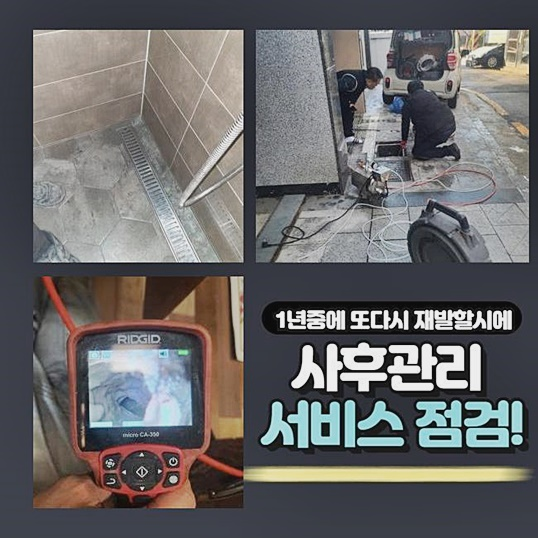
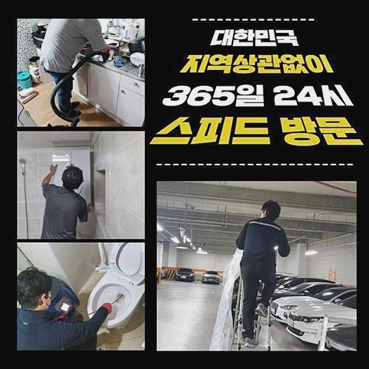
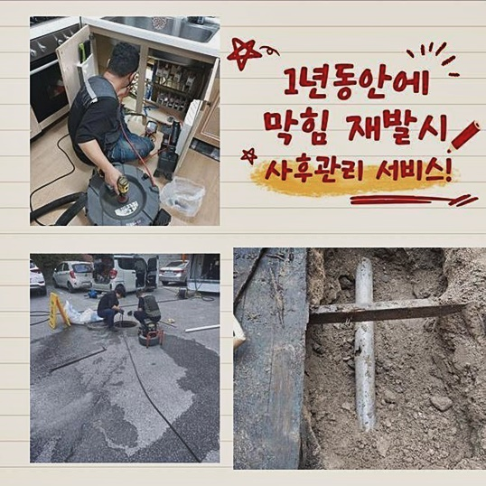
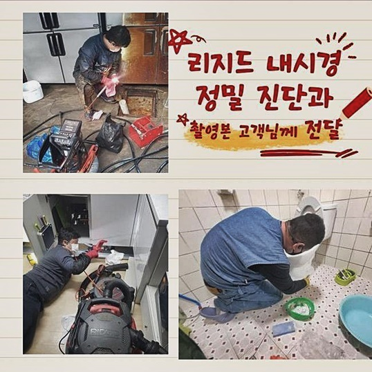
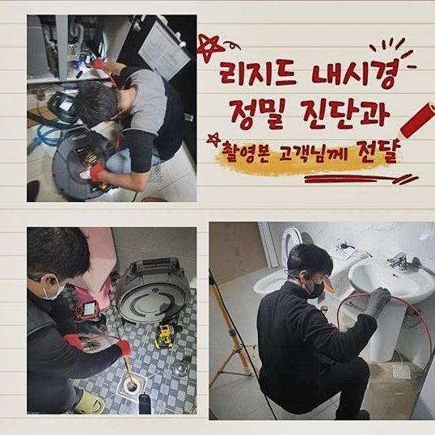
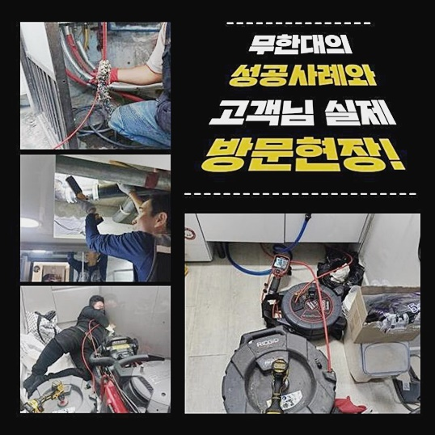
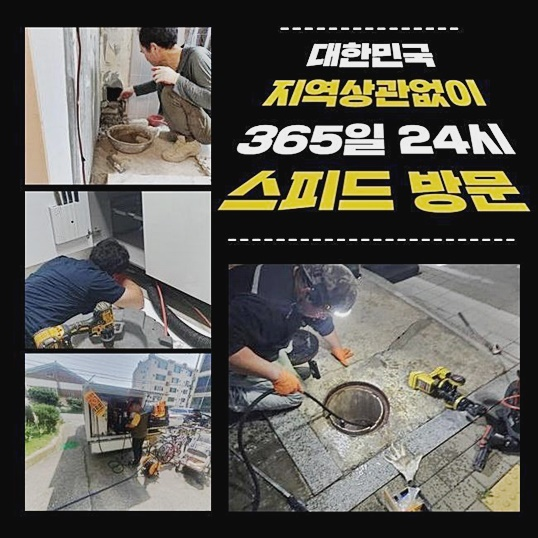

🏠 미추홀구 학익동싱크대배수관막힘 주안동 배관뚫기 배관공사
용인시 처인구 배관막힘 전문 시공 후기

📋 작업 개요
- 위치: 용인시 처인구, 수원시 영통구, 화성시 동탄
- 서비스 유형: 배관막힘, 고압세척, 내시경점검
- 작업 일시:
- 업체명: 하수구수사대 (010-5615-2118)
🔍 문제 상황
미추홀구 학익동싱크대배수관막힘 주안동 배관뚫기 배관공사
오늘 포스팅에서는 배수구가 막혀서 불편하셨던 의뢰자분의 이야기들을 소개하려합니다
가정 집에서 배수관이 막히게 되어 물빠짐이 안되는 상태에 놓였던 의뢰인은 눈에 보이는 도구들을 이용해 수리를 해보고자 해보았으나 현상을 더욱 악화되게 만들었죠
저희팀이 빨리 방문해서 진단을 해보니 꺾인 배관이 막히게 되어서 배수가 매끄럽게 되지 않은걸로 파악했습니다
운이 좋게도 한 고객분의 집에는 하수관이 깨진건 아니었지만, 꽉 막혀버린 배관을 고칠 수 없는 부분으로 경력자의 노하우가 필요한 순간이었죠
이른 아침에 문의를 주셨기에 속히 배수관을 꼼꼼히 문의자와 상담을 나누었습니다
불편한 점에 대해 다양한 사례를 들었는데, 배수 불량이 해결해야 할 과제였습니다
저희팀은 자세한 설명과 원인확인을 위해 적극적으로 이야기들을 경청하였고 이 부분을 기초로 수리를 하려고 최선을 다하고 있어요
이 결과 우리팀은 이런 사례들을 기초로 하여 꾸준히 발전해 나가고 있어요
무엇보다 하수도 막힘 문제해결 과정에서는 장비의 성능이 굉장히 필수적입니다
저희들은 내시경장치와 석션도구로 알려져 있는 최고 사양의 설비용품들을 가지고 있어서 업계 최고 능력을 보유하고 있습니다
세제를 지속적으로 사용했지만 배수가 되지 않으니 불편하셨다고 했습니다
배수관이 막혀있는 장소에 도착해서 점검해보니 현장에 위치한 바깥에 위치한 배관이 막혔다는 것을 알 수 있었습니다

🔎 원인 분석
💡 전문가 진단: 정밀 진단 장비를 사용하여 슬러지의 고착 여부를 판명하고 타격/세척 작업을 실시했습니다.
공동 배수관은 파이프가 굵고 꽤 넓어서 이물질이 끼어있는 곳을 즉시 제거하기엔은 쉬운일이 아니었습니다
결정적으로 고압으로 물세척을 실행하여 드렸습니다
강한압력으로 세척을 하고 나니 막힌 곳이 뚫렸고 다른 문제도 나타나지 않았어요
본 건물은 많은 가구들이 함께 쓰는 구조이므로 단독 세대가 아닌 다수의 집에 동일한 이슈가 생기는 사례가 흔합니다
해당 사례처럼에는 교차되는 곳에서 처리를 하게됩니다
여러집이 함께 이용하는 하수관은 주기적으로 세척등의 관리작업을 실행함이 필요하죠
더욱이 의뢰주신 매장이 위치한 건물에선 비슷한 현상을 겪은 인근 점포가 많은것으로 확인되었습니다
근처의 상점에서는 수도를 사용할 수 없다보니 매장 영업에 지장을 받았으며 아래층에 있던 변기도 하수파이프가 막혀 사용불가한 상태였습니다
지금과 같은 문제는 가게 운영에 큰 영향을 미치므로 빠른 조치들이 필요합니다 하수구가 막힌 원인은 빌딩의 구조적인 특성 및 주변 조건등의 많은 변인으로 일어나게 됩니다
그렇기 때문에 원인 파악시에는 많은 점을 생각해야 하죠
저희 업체는 신속하게 배관 막힘의 이유를 찾았습니다
빌딩의 아래에 있는 배관이 막힘의 주요 원인이었죠
그런데 하수관에서 점검하기가 어렵기 때문에 초기에는 인식하기 어려웠습니다

🔧 작업 과정
하수관 고압청소 과정을 시작하려고 장비를 셋팅했지만 찌꺼기들이 상당량 축적된 상태였습니다
그렇기 때문에 다른 방법의 조치들이 요구됩니다
우리팀은 의뢰인의 불편사항을 돕기 위해 언제나 집중합니다
근래엔 근방에서 막혀있는 배수관을 해결하려고 고압 물세척을 진행해드렸습니다
이물질들을 완전히 밀어내도록 수압을 강하게 적용하여 하수도관에 영향없이 깨끗하게 배수구 막힘을 수리했습니다
과정이 복잡해서 힘들었지만 우리 전문가들은 정확하고 속도감있게 작업을 마쳤습니다
의뢰주신 가구와 함께 이웃들의 불편도 함께 처리되어 모든 사람들의 만족을 받았습니다
하수관에 알맞게 오수구를 깨끗히하고 깔끔한 공간을 보존하기 위해 모든 노력을 다하고 있습니다
여러분의 편안함을 위해 늘 즉각적인 지원을 드리고 있습니다
하수도에 휴지등의 이물이 있을경우 관통생활용품들을 사용해서 막혀있는 물체를 제거하는 방법을 적용할 수 있습니다
그러나 방문해서 확인하니 물빠짐이 되지않고 도리어 물이 차올라 하수배관에 이상이 있을 가능성이 큰것으로 점검되었습니다
이 결과 비누등이 아니라 하수 배관에 이상 있음이 추정되어서 이웃 집에서도 같은 현상이 일어나는지 파악해 나가려고 관리실에 문의를 드려 상세히 점검을 진행해드렸습니다
결국 일부 이웃집에서 하수관 물들이 원활히 물빠짐이 안되는 이슈가 확인되어 공동 하수도관을 확인하니 현장에 위치한 오수관에 이상이 생기고 있음을 파악되었습니다
그러니까 따라 고객님들께 구체적인 내용을 설명해드리고 신속히 수리를 진행해 장애를 해소하도록 수리하였어요
막힌 배수관의 장애들이 해소되니 여러분의 불편을 줄이는데 성공했습니다
의뢰주신분께도 이런 현상에 대해 설명드렸어요
의뢰인은 배수파이프에서 배수 불량이 나타나게 된 것을 한번도 생각하지 못했어요 라고 전하셨어요
이 같은 꽉 막힌 하수구는 기술자가 아니라면 수리하기가 쉽지 않습니다
비전문가는 문제 해결이 힘듭니다
그러나 우리팀은 다년간 근무한 기술자들로 이루어져 있으므로 모든 배수관을 깨끗하게 정비 할 수 있습니다
문제 현장에 방문드린 베테랑 기사님께서도 많은 실무경험을 갖추고 있는 노련한 엔지니어입니다


✅ 작업 완료
믿을수 있는 팀은 이렇게 전문적인 기술자로 구성되었습니다
이로 인해서 많은사람들이 이용하는 공간도 정비를 실시해드리지만 다양한 거주지에서도 하수관 막힘 현상을 언제나 개선해드렸습니다
배수관이 막혀있는 상황일 땐 독한약품이나 뚫어뻥 드라이버등의 생활용품들을 활용하여 불편함을 없애려는 시도들은 실상은 하수관에 파손 가능성을 발생시킬수 있어 하지 않는게 좋습니다
그렇기 때문에 배수장애가 나타나면 속히 기술자를 불러서 이유가 무엇인지 확인하는게 중요한 일입니다
저희 서비스는 의뢰자분의 고민을 신속 정확하게 해결해드릴 것을 약속합니다
배수구막힘으로 스트레스를 받으신다면 누구나 배관 전문업체에 상담을 요청해주세요




⚠️ 하수구 배관 막힘 예방 및 관리 가이드
- ✅ 머리카락, 비닐, 물티슈 등 물에 분해되지 않는 이물질은 절대 흘려보내지 마세요.
- ✅ 기름기 많은 식기는 설거지 전 키친타올로 먼저 기름때를 닦아내세요.
- ✅ 주기적으로 배수구에 뜨거운 물을 가득 부어주어 유지방 고착을 방지하세요.
- ✅ 작업 후 1년 이내 재발 시 무상 A/S 보증 서비스를 제공합니다.
💡 핵심 정리
- 확실한 장비 작업(내시경 점검 및 샤프트 스케일링)으로 원인을 뿌리 뽑습니다.
- 작업 후 1년 이내에 동일한 부위 재발 시 100% 무상 A/S 서비스를 보장합니다.
- 서울 · 경기 · 인천 전 지역에 24시간 언제든 긴급 출동할 수 있도록 항시 대기 중입니다.
❓ 자주 묻는 질문 (FAQ)
🚨 용인시 처인구 배관막힘 문제로 고민이신가요?
정확한 원인 진단과 확실한 시공으로 재발 없는 해결을 약속드립니다.
24시간 긴급 출동 | 서울 · 경기 · 인천 전지역 | 1년 내 재발 시 무상 A/S